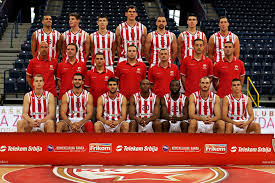

КК Црвена звезда
КК Црвена звезда (или, из спонзорских разлога, Црвена звезда мтс) српски је професионални кошаркашки клуб из Београдa. Део је спортског друштва Црвена звезда. Црвена звезда се такмичи у Кошаркашкој лиги Србије и домаћем Купу Радивоја Кораћа, и није испадао из прве националне лиге. Такође, чини Јадранску кошаркашку асоцијацију и такмичи се у АБА лиги, која одређује који ће се тимови такмичити у Евролиги а који у Еврокупу. Према УЛЕБ-овој листи Звезда је најбоље рангиран клуб од свих српских клубова, као и свих клубова из Јадранске лиге.[4] Црвена звезда као домаћин утакмице игра у хали Пионир, саграђеној 1973, са капацитетом од 5.878 седећих места, док утакмице у Европским такмичењима игра и у Штарк арени са предвиђеним капацитетом од 18.386 седећих места. Навијачи Црвене звезде се називају Делије.
Кошаркашки клуб Црвена звезда као посебна секција основан је истог дана када и Спортско друштво, 4. марта 1945. године. Први руководилац кошаркашке секције била је Мира Петровић. Међутим, веома брзо је бригу о Звездиним кошаркашима преузео Мирко Аксентијевић-Бата. Због последица рањавања током Другог светског рата, он није могао да игра, али зато је све своје време посветио организацији рада кошаркашке секције. Убрзо му се прикључио и Небојша Поповић, па су њих двојица заједно радили на унапређењу кошаркашке екипе Црвене звезде. У првим месецима постојања Црвене звезде највише се радило на логистици: поправљао терен, набављали кошеви, шили дресови и остало. Када је све ово учињено, започета је селекција играча који ће освојити велики број одличја. Првих десет година постојања, представља златно доба КК Црвена звезда. Освојено је десет узастопних титула државног првака. Синоним за кошарку био је Мали Калемегдан, где је Звезда и играла у првим годинама свога постојања. Један од најчешћих гледаоца на трибинама био је и једини српски нобеловац Иво Андрић, коме је нуђено да буде председник клуба.[7] Тадашњи тим био је предвођен петорком: Небојша Поповић, Тулио Роклицер, Александар Гец, Ладислав Демшар и Срђан Калембер. Поред врхунских резултата, Београђани ће памтити тадашњу екипу и по духовитим потезима којима су одушевљавали гледаоце.
Срђан Калембер ће заједно са саиграчем Миланом Бјегојевићем остати упамћен као играч са највише националних титула освојених са Црвеном звездом — и то укупно 9 у периоду од 1946. па до 1954. године. Ови успеси су били утолико већи с обзиром на декрет тадашње власти, по којој су сви Звездини играчи који су били војна лица морали да пређу у редове ривалског клуба Партизана. Међу њима најпознатији су: браћа Шапер, Ратко Влаховић, Браца Алагић и Александар Николић. Александар ће се међутим вратити у Црвену зведу после само једне сезоне и учествовати у освајању три националне титуле. Пар година касније у Партизан је прешао и Борислав Станковић како би добио пасош. Свих тих година првенство је играно по турнирском систему са мањим променама за сваку сезону. Тако је у сезони 1947. уведено играње квалификација. Тада је Црвена звезда остварила једну од најубедљивијих победа у првенствима — и то над Пролетером из Приштине од 110 : 15. Године 1952. уведен је систем играња кроз регионалне групе, а затим се играо завршни турнир у Зрењанину. Звезда је победила све своје противнике и заслужено одбранила титулу. Црвена звезда је током тих првих 10 година поред 10 освојених титула у 149 утакмица остварила 125 победа, имала 4 нерешене утакмице и претрпела 20 пораза.
Прелаз у нови миленијум донео је нове потешкоће у функционисању КК Црвена звезда. Наредних година дошло је до великих осцилација како у резултатима тако и у самој организацији клуба. У тиму су стасали млади талентовани играчи попут Милоша Вујанића, Милутина Алексића и Јована Копривице. Тренер је у једној сезони био и Мута Николић, али клуб није успео да задржи пре свега Радмановића како би био конкурентан. Убрзо након тога клуб напушта и Вујанић одласком у тим највећег ривала. Тенденција одласка играча из Црвене звезде настављена је и наредних година преласком Ђуре Остојића одмах након припрема, као и Луке Богдановића који је имао важећи уговор са Црвеном звездом. У сезони 2002/03. Црвена звезда по први пут учествује у Јадранској лиги која је формирана годину дана раније. Доласком словеначког тренера Змага Сагадина, дошло је до великих новина у Звездином тиму. Сагадин је пронашао и пар играча у нижим лигама који ће касније имати запажене каријере: Чедомир Витковац, Вук Радивојевић, Горан Јеретин и Лука Богдановић. Звезда је појачана са два искусна страна играча, Американцем Скунијем Пеном и Нигеријцем Обином Екезијем; заблистала је али није успела да се домогне иједног трофеја. Најближа је била трофеју у Јадранској лиги, али је у полуфиналу изненађење направила екипа Задра која ће и у финалу изненадити Макаби из Тел Авива.